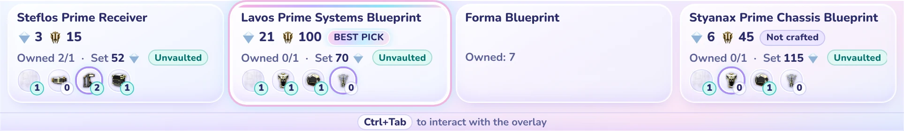
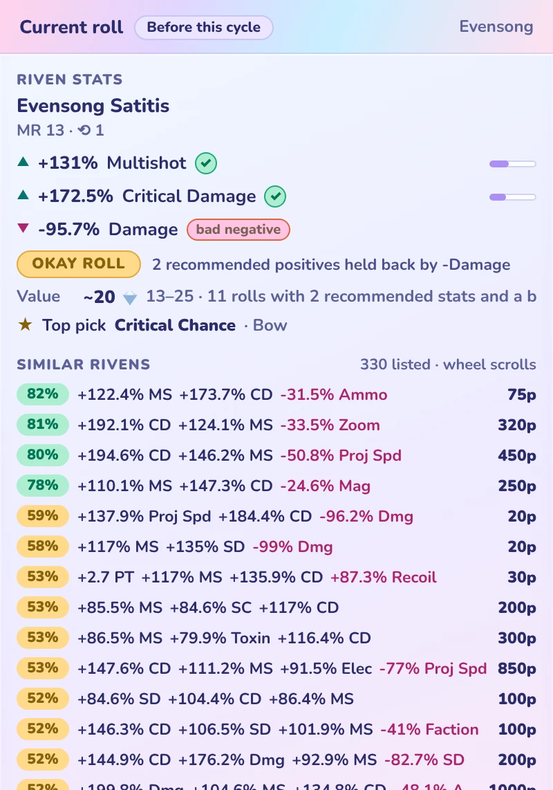
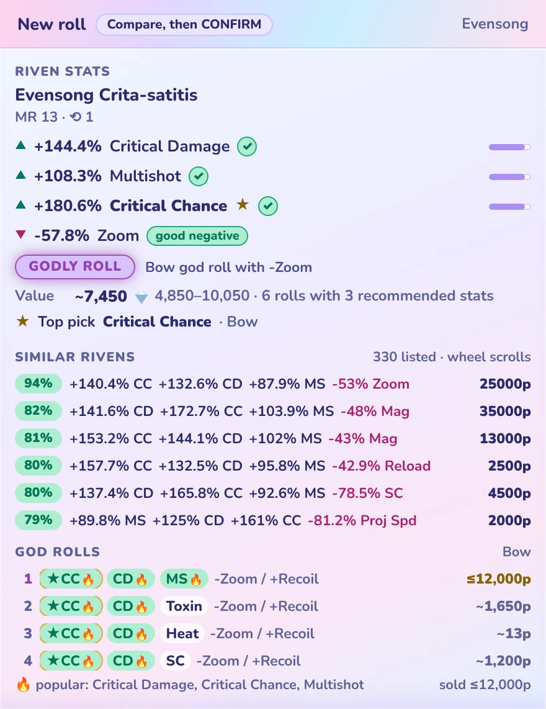

A Warframe companion for Windows
JynxPrime reads your inventory, prices it on warframe.market, and helps you decide what to farm, crack, sell or keep. While you play, small overlays show what relic rewards are worth and grade riven rolls.

What's in it
The pages in the app's sidebar, besides the dashboard above. The screenshots are from the app, all but one with a real account.
Overlays while you play
JynxPrime follows Warframe's log to know which screen you're on, reads that screen with text recognition that runs on your PC, and shows a small panel on top of the game.

The app's own overlay, drawn with example prices.


The app's own overlays, with warframe.market listings from October 2026. In game the left panel is taller; it's cut short here.
The overlays need Warframe in Borderless or Windowed mode, with the game in English. If you use Legacy or Custom menu scale, set it in Settings › In-game overlays, or let the app detect it.
What's new
Build 2026.11.23.2310, released November 23, 2026
- The in-game overlays should now work on every screen shape and size: 16:10, 4:3, 5:4, ultrawide 21:9 and 32:9, from 720p to 4K. They size everything the way Warframe sizes its menus, from a 1080p layout scaled to fit your screen.
- The overlays now follow Warframe's Menu Scale on every screen. At 70% and below, the riven cycling overlays used to miss the game's buttons and never open.
- In Riven Splicing, picking another riven no longer leaves the last riven's advice up when JynxPrime can't read the new card.
All changes
Every screen shape
- The overlays grow and shrink with the game like its menus do: bigger at 1440p and 4K, smaller but still readable at 720p. At 1920×1080 their content is the same size as before. If you set Rewards overlay size to Large or Extra large because it was small on a 1440p or 4K screen, try Compact again.
- Relic rewards: on 16:10, 4:3 and 5:4 screens, the reward names are read from the right places. Before, four rewards could be read as three. At 720p, 768p and 900p, the rewards overlay no longer covers the bottom of the booster row.
- Relic selection: on 4:3 and 5:4 screens, Omnia fissures are now recognised, and at 1024×768 the relic overlay no longer covers the fifth column of relics.
- Rivens linked in chat: on ultrawide screens, the card now sits right beside the game's popup instead of at the far edge.
- Riven cycling: on 16:10, 4:3 and 5:4 screens, JynxPrime finds the riven card by its MR line, so it never shows a roll made of the wrong lines. If it can't tell, it shows nothing. On 32:9 screens it now finds the riven's weapon.
- Riven Splicing: Splice check and Riven splicing are only as tall as what's in them, so on 4:3 and 5:4 screens and at lower Menu Scales they no longer cover the game with empty space. On 4:3 and 5:4, Riven splicing now sits under Splice check, where it has more room. On ultrawide screens, JynxPrime finds the splicing column from the game's SPLICE button.
- When Windows' built-in text reader takes the game's text as slightly tilted, JynxPrime now corrects the positions it reports. Before, this could keep the riven cycling overlays from noticing the reroll screen.
Menu Scale
- Set it in Settings › In-game overlays › Warframe "Menu Scale" setting, or click Autodetect next to it. With a Custom Menu Scale, Autodetect now reads the right percentage. Before, it could come out far too small (even 1%), so if you use Custom, click it again.
- Below Full, the riven cycling overlays now open at 70% and below and with Legacy at 1440p, and they no longer cover the currency bar or LOCK TRAIT. The relic overlay no longer covers the currency bar, and it shows your Void Traces at 90% and below instead of "–".
- With Legacy on 16:10 screens like 1920×1200, JynxPrime now takes the menus as full size, which should match the game (not yet checked in game).
Riven Splicing
- When you pick another riven and its card can't be read yet, both panels dim and say reading…, then show "Can't read the riven on screen." Before, they could keep the last riven's splices up.
- If JynxPrime finds the splicing screen but can't read it at all, the panels now open after a few seconds and say so. Before, nothing showed up.
Other fixes
- A riven linked in chat is no longer taken for its weapon's Prime version when someone in chat names the Prime (like "WTB Soma Prime").
- With Warframe on a second monitor, the overlays no longer jump to your main monitor when JynxPrime briefly loses track of the game window.
Good to know
- Only 16:9 screens (and 16:10 on the Riven Splicing screen) were measured in the game so far. Other shapes follow Warframe's sizing rules. If an overlay looks off on your screen, a screenshot and your companion.log (in %APPDATA%\JynxPrime) help: it now notes your game's size and Menu Scale when it sees a screen it can't read.
Download
Version 1.0.0, build 2026.11.23.2310. Free, no account needed.
Installs for your Windows user only, without admin rights. Adds JynxPrime to the Start menu and to Apps & Features, so it uninstalls cleanly.
Download installer (92 MB)No install. Extract the whole zip to a folder you can write to, like Documents\JynxPrime, then run JynxPrime.exe.
SHA-256 checksums
- JynxPrime-Setup.exe
- e595f8e855798790a6816cd6d6394cc83419f73c9d321cd9331c12cd10996b54
- JynxPrime.zip
- 1dd03e67e1852e64efff7b16f0c4df51ecd5e9f5365f855a778f472094973635
Installing
- Run JynxPrime-Setup.exe. Windows may show a blue SmartScreen box because the app isn't from a big publisher: click More info, then Run anyway.
- Open JynxPrime from the Start menu. The first start downloads about 25 MB of game data, so give it a minute.
- It opens with a demo account so you can look around. Connect your own Warframe account in Settings › Account.
Requirements
- Windows 10 or 11, 64-bit
- It doesn't run on macOS, Linux or consoles.
- Microsoft Edge WebView2
- Built into Windows 11 and most Windows 10 PCs. If yours is missing it, JynxPrime tells you and opens Microsoft's download page.
- Warframe on the same PC
- Only for the overlays and trade tracking. Everything else works without the game running.
Questions
Is it safe to use with Warframe?
JynxPrime only reads: Warframe's log file, your screen (for the overlays) and public data like warframe.market prices. It never changes game files or sends keyboard or mouse input to the game.
The optional live sync reads the game's memory, read-only, to pick up inventory changes as they happen. No anti-cheat has approved it, so it's off by default, and turning it on is at your own risk.
Where does my data go?
It stays on your PC, in %APPDATA%\JynxPrime. There's no JynxPrime account or server. The overlays read the screen with text recognition that runs locally, so no screenshots are uploaded.
If you sign in to warframe.market, your password goes straight to warframe.market and only the session is kept, encrypted with your Windows account.
Windows says it protected my PC. What do I do?
That's SmartScreen, which warns about any download it hasn't seen from many people yet. Click More info, then Run anyway. You can compare the file with the SHA-256 checksum above if you want to be sure it's the real one.
How do I get a newer version?
New versions are posted in the Discord and on this page. Download the installer again and run it: it installs over the old version, and your account, builds and settings are kept.
How do I uninstall it?
Open Settings › Apps in Windows, find JynxPrime and click Uninstall. Your data in %APPDATA%\JynxPrime is left alone; delete that folder too if you want everything gone. For the portable zip, delete its folder.
Does it work on a Steam Deck, Mac or console?
No, only on Windows 10 and 11 PCs.
Is this made by Digital Extremes?
No. JynxPrime is an unofficial fan-made tool and isn't affiliated with or endorsed by Digital Extremes.
Discord
Questions, bug reports and ideas go here. New versions are announced in #announcements, with what changed.